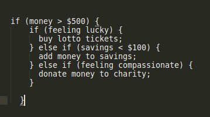
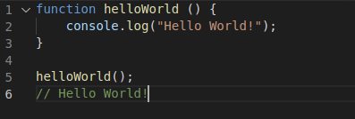

Differences between HTML and CSS:
HTML is like the nuts and bolts of a site, it holds up the whole structure and shows us the basic construction and where everything should go. We could think of it as like a house, HTML is like the structure of the house, the foundation, walls and roof, it’s the structure that holds everything together. Without the foundation, we wouldn’t have a house at all, nothing would keep it together. CSS is like the paint and decorations of the house, it’s what we use to make the house our own and to give it some life. If we didn’t paint and decorate our house it wouldn’t be a very nice place to live and people wouldn’t want to visit us. Likewise, if we didn’t use CSS no one would want to come to visit our site because there wouldn’t be much to look at, it would be quite boring. Javascript provides the interactivity that lets us interact with everything in the house, so we can open and close doors, windows, switch the lights on and use the oven.
Control Flow and Loops:
Control flow is what we use to make decisions. For example, if we have an extra $500, should we go and spend it straight away or save it for another day or donate it to charity? Control flow evaluates decisions to true or false to decide on what course of action we should take. If we’re feeling lucky, we might decide to go spend the money on lotto tickets, if we have less than $100 in our savings account we might decide to save it, if we feel compassion for people who have less than us we might decide to donate it to charity.
Loops are what we use when we want to repeat the same code over until a condition is met. An example from everyday life might be when we are sauteing onions that we keep stirring them, and repeat this action until they turn golden.
Example of control flow using pseudocode:
A surprising amount of our everyday decisions can evaluate to true or false!
The DOM:
DOM stands for Document Object Model and it is a hierarchical model of everything that is on our webpage, this helps our browser to understand what is going on. In our HTML we usually have many different elements, these are included in the DOM, as well as everything else on the page and in the DOM these are called nodes. We can use javascript to interact with the DOM and change everything on the webpage, this can help to make our webpage interactive.
Difference between accessing data from arrays and objects:
In objects data is stored in a key: value pair. We can use dot notation or a square bracket along with the key name to access the value. Objects are used to represent something, such as a record collection and store data related to it. All the data in an object can be accessed and modified using different commands.
In arrays, data is stored in a list and can be accessed only using a numerical index that starts from 0. All the data in an array is changeable and we can use different commands to add and remove items from an array.
Functions:
Functions are like a container that holds some code that we want to reuse. This is so we don’t have to copy and paste code we want to reuse throughout our file which would make it hard to read but we can group code together in a funciton to perform a task that we can reuse throughout our program. Whenever we need the code we can then just call the function using a short command. Functions can be very simple or very complex and are so useful that they are used in virtually all javascript apps.
A very simple function:
